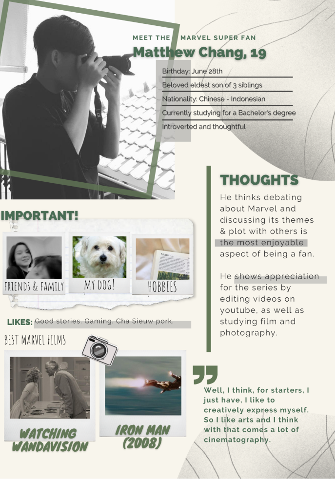

Ethnography
In this project, i conducted semi-structured and ethnographic
interviews with local marvel fans in den haag.
I learned an array of techniques which include but not limited
to: making research protocols, observing, interviews,
qualitative data analysis and presenting my findings in an
visually interesting way, such as the user persona.
